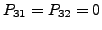
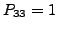

#include <gandalf/vision/affine33_fit.h>
If the region of the scene in which a homography is to be computed is small,
or a long focal length lens is being used, an affine 2D model of motion is
usually adequate, and indeed computing a full projective model can become
unstable. The function defined in this module is a version of
gan_homog33_fit() for computing an affine 2D homography,
which can be formed from a full projective homography by imposing the
constraints
, . To fit an affine 2D homography
replace the call to gan_homog33_fit() in the above code fragment with
/* fit affine 2D homography */
gan_affine33_fit ( aMatch, uiNoMatches, &m33P );
Error detection: gan_affine33_fit() returns a boolean value; hence GAN_FALSE is returned on error and the Gandalf error handler is invoked.